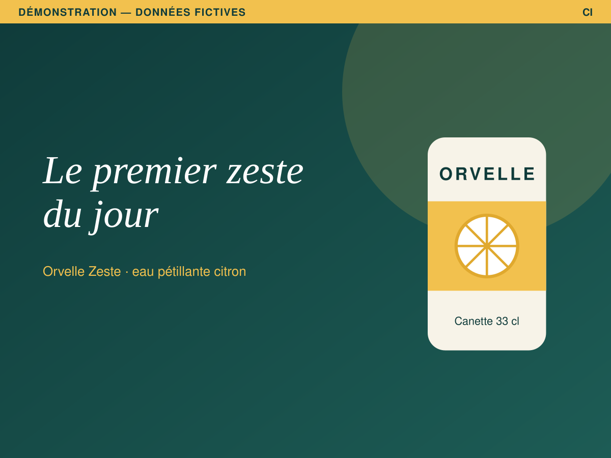
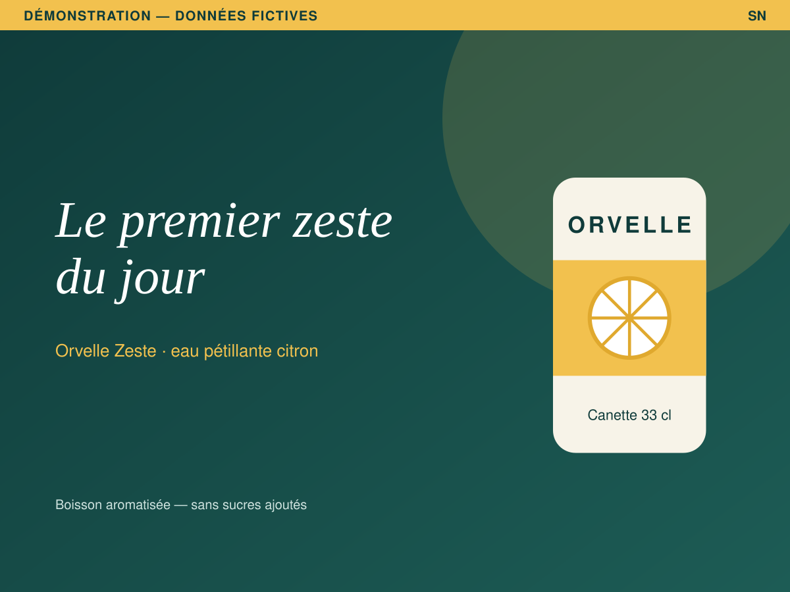
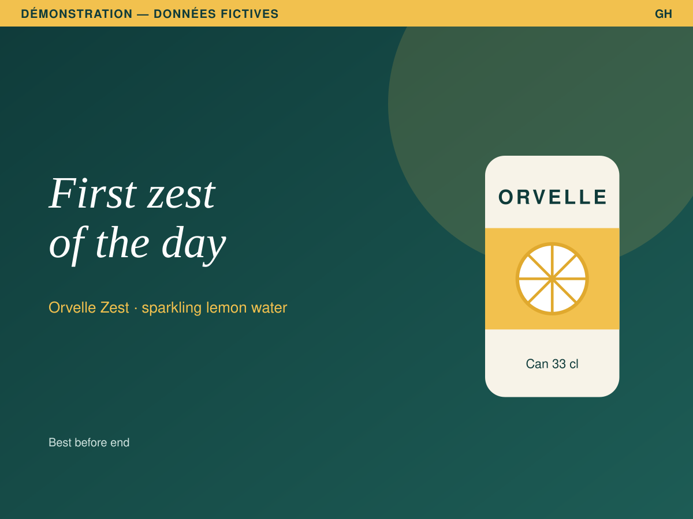

Une marque inventée, un dossier complet
Orvelle est une eau pétillante qui n'existe pas. Son agence non plus. Le dossier « Orvelle Zeste — lancement » suit le lancement d'une eau au citron sur trois marchés : la Côte d'Ivoire, le Sénégal et le Ghana. Chaque étape ci-dessous s'ouvre dans la démonstration, à l'écran où elle se joue.
-
1
Le brief, accepté sur pièces
Le brief porte ses champs critiques, son décideur, sa clause de frontière et le bilan de la campagne précédente. Il est accepté par une décision datée ; le brief-back, envoyé par écrit, a reçu sa réponse. Ce qui a été compris ne se discute plus de mémoire.
Voir le brief → -
2
La big idea, et ses critères écrits avant le travail
« Le premier zeste du jour. » L'idée vient d'un insight sourcé et testé, rattaché à la plateforme de marque. Ses critères d'acceptation — la canette lisible à trois mètres, une seule idée par visuel — sont écrits avant le premier crayon : ce sont les seuls refus opposables.
Voir la big idea → -
3
Trois pistes, une retenue, deux écartées par écrit
Chaque piste dit ce qu'elle sacrifie et ce qu'elle défend. La retenue l'est sur un argument ; les deux autres sont écartées avec leur motif. L'arbitrage entre au registre des décisions, pas dans un fil de mails.
Voir les pistes → -
4
Le master, validé en deux tours
La V1 du KV master revient : la canette ne se lit pas à trois mètres, et c'est un critère écrit, pas un goût. La V2 est approuvée. Chaque verdict porte sa version : une validation sur la V2 ne valide pas la suivante.
Voir la planche des KV → -
5
Les variantes par marché, et ce qu'elles ont le droit de changer
Au cadrage, chaque marché a déclaré son écart au master : la Côte d'Ivoire aucun, le Sénégal le réglementaire (une mention imposée), le Ghana le produit (sa canette locale). Le master porte la décision ; les variantes ne portent que l'écart.

CI · aucun écart déclaré 
SN · réglementaire 
GH · déclaré : produit · hors écart déclaré : langue L'adaptation du Ghana a traduit la titraille. La langue n'avait pas été déclarée pour ce marché : La Barre ne bloque pas l'adaptation, elle la signale « hors écart déclaré », avec la dimension qui sort. La revue tranche, motif écrit : corriger l'écart déclaré, ou corriger l'adaptation. Les deux gestes sont des décisions du registre. Essayez-les.
Voir les livrables et les écarts par marché → -
6
Les décisions, au même registre
Brief accepté, plateforme validée, idée retenue, pistes arbitrées, verdicts sur chaque version : chaque décision porte son verdict, son motif, sa date et la personne qui l'a rendue. Ce qui reste à trancher remonte dans une seule file, triée par ce que ça coûte d'attendre.
Voir ce qui attend une décision → Voir le recueil des arbitrages → -
7
Le BAT, signé sur la bonne version
Une version approuvée à l'écran n'est pas un fichier parti. L'affiche 4×3 de Côte d'Ivoire a son BAT signé par la cliente, sur la V1 ; celle du Sénégal a son BAT posé, sans signataire. La Barre dit lequel peut partir chez l'imprimeur, et ce que le manifeste de remise attend encore.
Voir la planche de livraison → -
8
Le bilan, que la campagne suivante peut opposer
La campagne précédente, « Orvelle Source 2026 », est close. Son bilan est arrêté en une version figée, datée, avec son empreinte ; c'est lui que cite le brief d'Orvelle Zeste. Le bilan de ce lancement se clora de la même façon.
Voir la campagne précédente et son bilan →
Ce que montre la démonstration, et ce qu'elle ne montre pas
- Des données fictives. Aucune marque, aucune personne, aucun client ni aucune campagne réels. Les relevés et les chiffres sont inventés.
- Rien ne s'enregistre. La démonstration tourne en mémoire, dans votre navigateur : recharger la page la remet à zéro. Elle ne lit aucune base de travail et n'écrit nulle part.
- Aucune mesure revendiquée. La démonstration montre des gestes ; elle ne prétend à aucun gain de temps, taux d'adoption ou résultat commercial.
- L'outil réel reste fermé. En agence, La Barre est servie derrière la session de La Fusée, qui atteste qui décide. La démonstration n'y donne aucun accès.